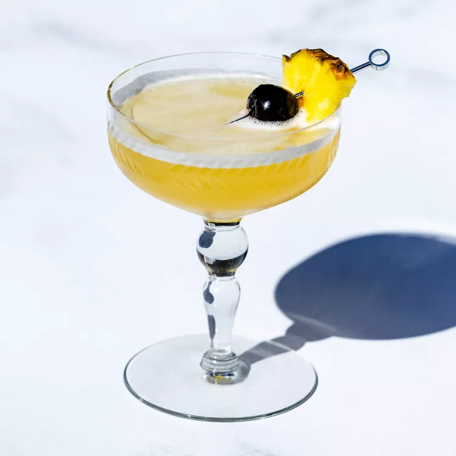

unlimited THrust

Royal Balmoral Punch
Named for the Royal Family's Scottish summer home, this drink by bartending vet Charlotte Voisey combines fine single malt and good English tea.
-
Ingredients
- 3 ounces Glenfiddich 21-year-old single-malt scotch
- 2 ounces Granny Smith apple juice
- 1 ounce tea syrup
- Sparkling lemonade, to top
- Champagne, to top
- Garnish: lemon wheel
- Garnish: lemon wheel
-
Steps
- If desired, this recipe can multiplied to serve a crowd: Mix in a punch bowl with a large block of ice.
- 1.Add the scotch, syrup and apple juice to a teacup and add a large ice cube.
- 2.Top with equal amounts of sparkling lemonade and Champagne, and stir gently and briefly to combine.
- 3.Garnish with a lemon wheel and a thistle, if desired.
Dreamy Dorini Smoking Martini
An additional upgrade renders this Martini anything but ordinary. Rather than the blended scotch her mentor’s recipe calls for, in Saunders’ cocktail a super-peaty Islay single malt scotch takes the smoky flavor to soaring heights. It’s a dreamy Martini variation, indeed.
-
Ingredients
- 2 ounces vodka (such as Grey Goose)
- 1/2 ounce Laphroaig 10-year-old single malt scotch
- 1 dash Pernod
- Garnish: lemon twist
-
Steps
- 1.Add all ingredients into a mixing glass with ice and stir until well-chilled.
- 2.Strain into a cocktail glass.
- 3.Express the oils from the lemon twist over the drink, then garnish with the twist.
Algonquin
The Algonquin is a classic New York City cocktail consisting of rye whiskey, dry vermouth, and pineapple juice. It’s thought to have originated during the early 20th century, with published references to the drink appearing as far back as 1935 and various recipes appearing in cocktail books over the following two decades
-
Ingredients
- 11/2 ounces rye whiskey
- 3/4 ounce dry vermouth
- 3/4 ounce pineapple juice
- Garnish: pineapple wedge
- Garnish: maraschino cherry
-
Steps
- 1.Add all ingredients except garnishes to a cocktail shaker filled with ice and shake for 10–15 seconds until well-chilled.
- 2.Double strain through a fine mesh strainer into a chilled coupe or Nick & Nora glass.
- 3Garnish with a pineapple wedge and maraschino cherry.